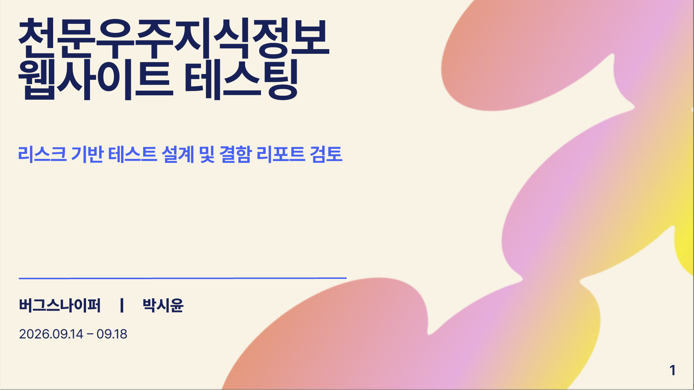
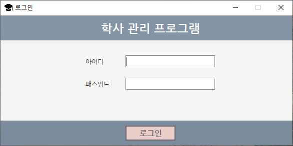

천문우주지식정보 웹사이트
테스트 프로젝트
공공기관 웹사이트인 천문우주지식정보(https://astro.kasi.re.kr/)를 테스트했습니다.
Figma에서 보기
공공기관 웹사이트인 천문우주지식정보(https://astro.kasi.re.kr/)를 테스트했습니다.
Figma에서 보기
학생·교수·학과·강좌 정보를 관리하고 수강 신청과 성적 처리를 지원하는 데스크톱 프로그램입니다.
GitHub에서 보기